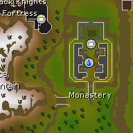

[[ activeTab == 'events' ? 'Random event timeline' : 'Other Fun Stats' ]]
Monastery chunk - Last Updated [[ lastModified ]]
[[ events.length.toLocaleString() ]]
recorded events
~[[ events.length * 90 / 60 / 24 ]]
Days of playtime
Loading random events
Loading...
Spawn map
Each numbered marker is one random event NPC spawn.

Timeline
[[ item.index + 1 ]]
[[ item.event.npcInfoRecord.npcName ]]
[[ formatDate(item.event.spawnedTime) ]]
[[ item.event.npcInfoRecord.worldX ]], [[ item.event.npcInfoRecord.worldY ]]
Dry streaks by event
"Dry" means at least [[ chanceDenominator ]] recorded random events have occurred since that NPC last appeared.
| [[ stat.name ]] Last seen at event [[ stat.lastSeenEvent.toLocaleString() ]] Not seen in this log | [[ stat.count.toLocaleString() ]] | [[ formatExpected(stat.expected) ]] | [[ formatSigned(stat.difference) ]] | [[ stat.longestDry.toLocaleString() ]] | [[ stat.currentDry.toLocaleString() ]] [[ stat.dryMultiplier.toFixed(1) ]]x 23 | [[ formatPercent(stat.noHitProbability) ]] |
|---|
Loading profile data...
[[ profileError ]]
Progress
Recent changes
No changes recorded for this period. Progress begins with the next changed snapshot.
[[ profileDisplayName(group.plugin) ]]
[[ profileEntryLabel(group.plugin, change.key) ]]
[[ Number(change.after).toLocaleString() ]]([[ ultimateStatDelta(change) > 0 ? '+' : '' ]][[ ultimateStatDelta(change).toLocaleString() ]])
[[ change.loot ? change.loot.name : change.key ]]
[[ profileChangeLabel(change) ]]
[[ formatDate(change.at) ]]
Updated [[ formatDate(change.at) ]]
[[ change.before ?? '—' ]] → [[ change.after ?? '—' ]]
Current data
[[ profileDisplayName(group.plugin) ]]
[[ profileEntryLabel(group.plugin, entry.key) ]][[ entry.value ]]